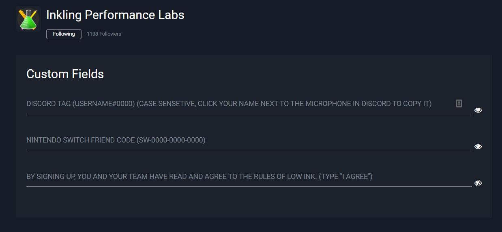

Before getting started, it's important to note that Low Ink is a 2 day event for Splatoon teams. Before registering, you must form a team, or join another team. Ensure you or enough of your teammates are free for both days of Low Ink.
To form a team, most people find success on Splatoon community discord servers. We recommend getting started at Inkling Performance Labs, which is the discord server Low Ink is managed in. It features channels to help people form or join Splatoon teams. You should also check out the Inkademy, which is a server to help newer competitive Splatoon players learn. Those are not the only places to find people, but they’re great starting points!
Low Ink registration typically opens at the start of each month. If info on the next event is shown on this website’s home page, then you’re able to register! If not, then you’ll need to wait for the staff to open it.
Low Ink is hosted using Discord and a site called Battlefy. Most communication and announcements are made on the Inkling Performance Labs Discord, while all the brackets and matches are handled on Battlefy.
To register for Low Ink, you need to visit the Low Ink Battlefy. A quick way to visit the Low Ink Battlefy is to go to play.iplabs.ink/li. Once there, click the red registration button on the right, it might be on the bottom if you’re on mobile. Only one person from a team needs to register!

Once there, you’ll be prompted with the rules. Please read through them!
Past that page, you’ll be promoted to select which team you’d like to register with; or you have the option to make a new team!

Once that has been handled, you’ll need to give us some info. All you need to do is enter your team captain’s discord tag, switch friend code, and let staff know you’ve agreed to the rules! The discord tag is used by our discord bot to assign important roles, so make sure it matches exactly!
If needed, you may invite your teammates to your Battlefy team via the link the site provides you.

Just to ensure you’ve got everyone in the right place, your team and registration status will now be visible on the main Low Ink battlefy page. Remember that all players you want playing must be on the roster, if they’re under “inactive team members”, they cannot play! You may not add players to your team’s roster after registration closes.
After registering, the team’s captain must join the Inkling Performance Labs Discord to gain access to important announcements from staff! Remember to get the Low Ink role from the rules and roles channel to see the Low Ink channels.
When the day of the event arrives, it's important to follow instructions from discord announcements. They’ll remind you of important deadlines and info on the tournament’s progression. Keep an eye out for them!
Before the event starts, all teams that are able to play must check into the tournament. Once you know enough of your team members can play, then you need to hit the check in button on the main Low Ink Battlefy page. It should be in the same spot where you handled registration.
Once the tournament begins, you may find your match in Battlefy. There will be a button that says “go to match” on the main Low Ink Battlefy page. Once there, you have access to the match page. Here, you can chat with your opponents, access their friend code, and report scores. Go ahead and choose who hosts the private battle room, and start your round here!

If you have any issues come up during your match, please click the report match issue button and a staff member will visit to help resolve your issue! You may also ask for help in our discord in the li-helpdesk channel.